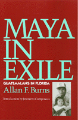

<body bgcolor="#FFFFFF" text="#000000" link="#0000FF" vlink="#CC0000" alink="#CC0000"><center><hr width="350" size="1" align="center" noshade>The first report on the cultural adaptation of Guatemalan Maya immigrants to Florida<hr width="350" size="1" align="center" noshade><p><a href="https://cdcshoppingcart.uchicago.edu/Cart/ChicagoBook.aspx?ISBN=9781566390354&&PRESS=temple" target="_top">Buy this book!</a> | <a href="https://cdcshoppingcart.uchicago.edu/Cart/Cart.aspx?PRESS=temple" target="_top">View Cart</a> | <a href="https://cdcshoppingcart.uchicago.edu/Cart/Cart.aspx?PRESS=temple" target="_top">Check Out</a></p><p></p></center><!--none//--><h1>Maya In Exile</h1>
<H2>Guatemalans in Florida</H2>
<H2><!-- Jeronimo Camposeco --></H2>
<h3>Allan F. Burns, introduction by Jer�nimo Camposeco</h3>
<P>cloth 1-56639-035-4 $72.50, Jun 93, <FONT COLOR=#990033>Out of Stock Unavailable</FONT>
<br>paper 1-56639-036-2 $31.95, Jun 93, <FONT COLOR=#990033>Available</FONT>
<br>Electronic Book 1-43990-381-6 $31.95 <FONT COLOR=#990033>Out of Stock Unavailable</FONT>
<BR> 256 pp
5.5x8.25
10&nbsp;figures 18&nbsp;halftones
</P><BLOCKQUOTE><I>"Effectively interweaving ethnography and applied anthropology, this book contributes significantly to our understanding of the complex issues involving resettlement. The inclusion of Maya voices is particularly evocative, helping to personalize the challenges associated with changing family roles, community structure, and ethnic identities."</I>
<br>&#151<b>James Loucky</b>, Professor of Anthropology, Western Washington University<I></I></BLOCKQUOTE>
<p>The Maya are the single largest group of indigenous people living in North and Central America. Beginning in the early 1980s, hundreds of thousands of Maya fled the terror of Guatemalan civil strife to safety in Mexico and the U.S. This ethnography of Mayan immigrants who settled in Indiatown, a small agricultural community in south central Florida, presents the experiences of these traditional people, their adaptations to life in the U.S., and the ways they preserve their ancestral culture. For more than a decade, Allan F. Burns has been researching and doing advocacy work for these immigrant Maya, who speak Kanjobal, Quiche, Maman�, and several other of the more than thirty distinct languages in southern Mexico and Guatemala. In this fist book on the Guatemalan Maya in the U.S, he uses their many voices to communicate the experience of the Maya in Florida and describes the advantages and results of applied anthropology in refugee studies and cultural adaptation.
<p>Burns describes the political and social background of the Guatemalan immigrants to the U.S. and includes personal accounts of individual strategies for leaving Guatemala and traveling to Florida. Examining how they interact with the community and recreate a Maya society in the U.S., he considers how low-wage labor influences the social structure of Maya immigrant society and discusses the effects of U.S. immigration policy on these refugees.
<BR>&nbsp;<h2>Contents</h2><P>
<p>Preface
<br>Acknowledgments
<br>Introduction &#150 Jer�nimo Camposeco
<br>1. Maya Refugees and Applied Anthropology
<br>2. Escape and Arrival
<br>3. Life Crisis and Ritual
<br>4. The Maya in Community and Ethnic Context
<br>5. Work and Changes in Social Structure
<br>6. Conflict and the Evolution of a New Maya Identity
<br>7. Visual Anthropology and the Maya
<br>8. Always Maya
<br>Bibliography
<br>Index
</P><BR>&nbsp;<H2>About the Author(s)</H2>
<P><b>Allan F. Burns</b> is Professor of Anthropology and Latin American Studies at the University of Florida. The author of <I>An Epoch of Miracles</I>, he has produced four video programs on Maya refugees in Florida.</P>
<BR><H2>Subject Categories</H2>
<p><A HREF="/tempress/anthropology.html" TARGET="_top">Anthropology</a>
<BR><A HREF="/tempress/latin.html" TARGET="_top">Latin American/Caribbean Studies</a>
</p>
<p align="center"><a href="https://cdcshoppingcart.uchicago.edu/Cart/ChicagoBook.aspx?ISBN=9781566390354&&PRESS=temple" target="_top">Buy this book!</a> | <a href="https://cdcshoppingcart.uchicago.edu/Cart/Cart.aspx?PRESS=temple" target="_top">View Cart</a> | <a href="https://cdcshoppingcart.uchicago.edu/Cart/Cart.aspx?PRESS=temple" target="_top">Check Out</a></p><p><font face="Arial" size="1"><a href="copyright.html" onMouseOver="window.status='Web Copyright Policy';return true;" onMouseOut="window.status=''" title="Web Copyright Policy">&copy;</a> 2015 <a href="http://www.temple.edu" target="new" onMouseOver="window.status='Link to Temple University home page';return true;" onMouseOut="window.status=''" title="Link to Temple University home page">Temple University</a>. All Rights Reserved. http://www.temple.edu/tempress/titles/833_reg.html</font></p>